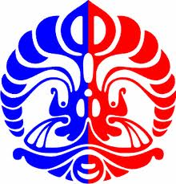

IKI20505 - Sistem Operasi
Membuat Web Server Berbasis Multithread
Tujuan
-
Mahasiswa memahami konsep socket dan HTTP berbasis TCP
-
Mahasiswa mampu memanfaatkan API Socket dan Thread untuk membuat dan mengatur web server
Sifat Tugas
Kelompok (max: 2 orang)
Deskripsi
Webserver adalah aplikasi server berbasis TCP yang mengirimkan/menampilkan objek file (html, image, video, dan lainnya) pada browser ataupun aplikasi client lainnya.
Pada
tugas kali ini, Anda diminta untuk membuat aplikasi web server yang
dapat merespon setiap permintaan objek dari client. Penjelasan
teknis tugas dapat Anda baca disini.Tugas ini diadaptasi dari Assignment 1 buku Computer Networking, James F. Kurose, Keith W. Ross, edisi 5.
Spesifikasi tambahan program :
- User dapat menentukan no port dengan menambahkan argumen pada command line. Range no port antara 1024 sampai 65535
- Akses URL http://namahost:port/ atau http://namahost:port/direktori akan secara otomatis dipersepsikan oleh web server sebagai http://namahost:port/index.html atau http://namahost:port/direktori/index.html. Jika index.html tidak ditemukan, web server akan menampilkan daftar nama file/direktori dari current directory ke layar browser. Setiap nama file/direktori mempunyai link lokasi yang dapat diklik oleh user.
- Web browser harus dapat menampilkan konten html dan image dilayar browser
Point bonus bagi tim yang dapat memberikan fitur lebih diluar fitur yang dideskripsikan pada tugas ini. Jika dan hanya jika fitur tambahan tersebut bermanfaat.
Pengumpulan
Dokumen
yang dikumpulkan HANYA file program dalam bahasa java lengkap
dengan penjelasan/komentarnya. Sertakan no kelompok, nama anggota dan
npm pada komentar program.
Penilaian
Program
harus didemokan dihadapan asisten. Tanpa demo nilai tugas adalah 0.
Akurasi program (65%) dan penjelasan/komentar program (35%)
Batas Akhir Pengumpulan
Kamis, 27 Oktober 2011. Pukul 23.55 WIB melalui halaman kuliah Jaringan Komputer di Scele. Sebelum file di kirim, kompres file java Anda dengan format: NoKelompok-Kelas-tk01.zip